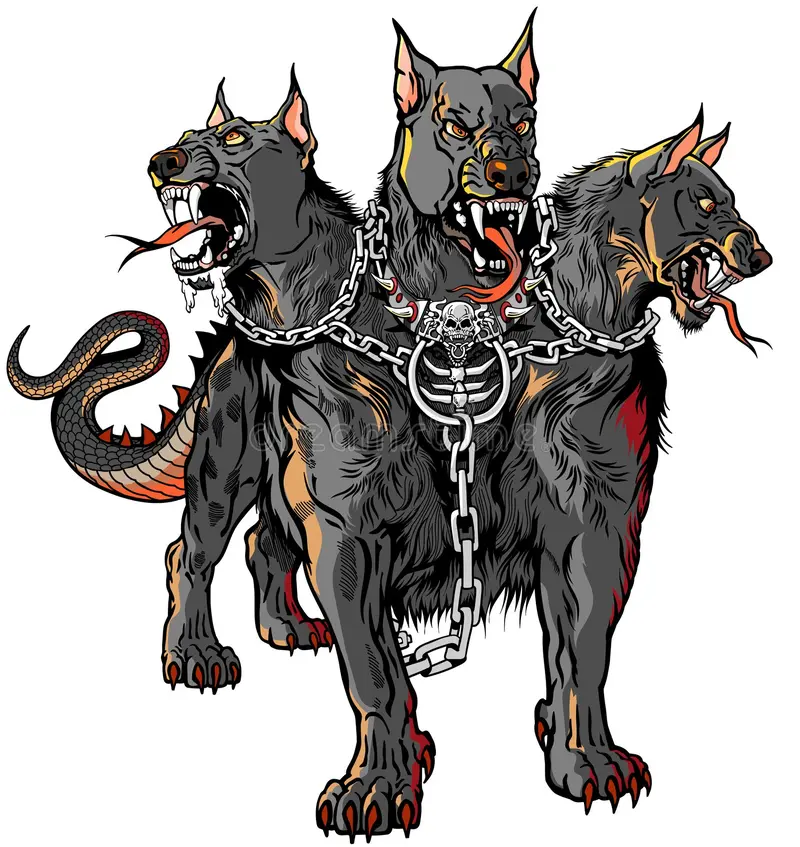
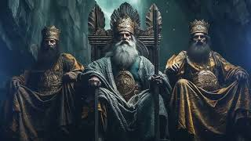
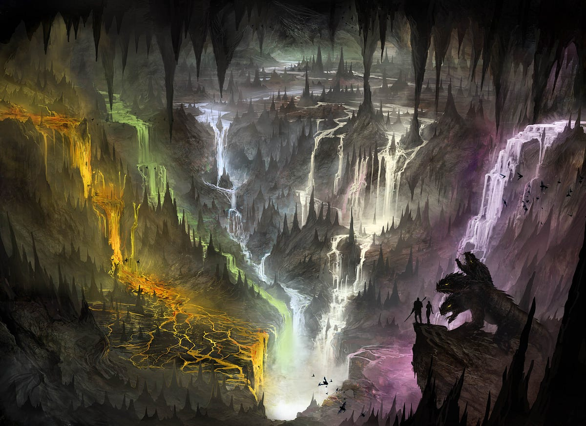
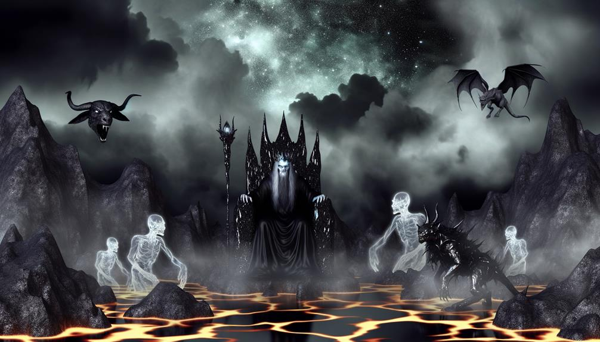

You stand on the dark shore of the Styx. Charon, the grim ferryman, awaits with his rusty boat. His glowing eyes examine you carefully. You hear the wailing of lost souls in the mist.
"Another soul," Charon growls in his deep voice. "Do you have the obolus for the crossing?"

At the gates of Hades stands Cerberus, the three-headed hellhound. His six red eyes glow like embers, and drool drips from his massive fangs. A deafening roar shakes the underworld.
The middle head growls menacingly while the other two circle around you.

You stand before the three judges of the underworld: Minos, Rhadamanthys, and Aeacus. They sit on marble thrones, their faces stern and merciless. Before them lies a golden scale weighing your deeds.
Minos speaks with a thunderous voice: "Soul, tell us of your greatest deed in life."

The judges have spoken, but a final trial awaits. Before you appear three paths leading into the depths of the underworld. A mysterious shadow whispers:
"Choose wisely, mortal. One path leads to eternal bliss, one to endless boredom, and one to unimaginable torment. Your final choice will seal your fate."
You have reached the Elysian Fields!
You enter a land of indescribable beauty. Golden meadows stretch to the horizon, crystal-clear streams babble softly, and the scent of ambrosia fills the air. Here, heroes and the righteous dwell in eternal bliss.
Your noble deeds and pure heart have earned you this paradise of the Greek underworld. You shall live forever in peace and joy.

You now wander the Asphodel Meadows
You find yourself in an endless grey plain, covered with pale asphodel flowers. Here wander the souls who were neither particularly good nor evil. Eternal twilight reigns, and time has no meaning.
Your average deeds have led you to this neutral existence. You will remain here in peaceful but monotonous rest—neither rewarded nor punished.
You have been banished to Tartarus!
You plunge into the deepest pits of the underworld. Here, in Tartarus, criminals and blasphemers suffer eternal torment. Rivers of fire flow through black rocks, and the howls of the damned fill the air.
Your wicked deeds and cold-hearted behavior have doomed you to this terrible fate. Here you will atone for your sins.